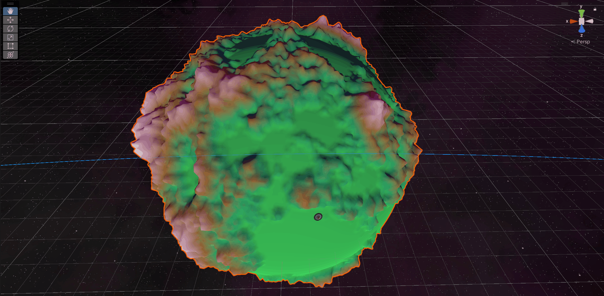

Back
For my computer science thesis, I developed a space-themed video game in Unity, showcasing innovative geometry generation algorithms for procedurally generated planets. Additionally, I implemented advanced physics simulations to create realistic gravitational effects, enhancing player immersion and interaction with the game world. This project not only demonstrates my technical skills in game development but also my ability to blend creativity with complex programming challenges.
My Work

Procedural geometry generation
Developed a procedural planet generation system utilizing Perlin noise to create diverse and visually stunning planetary landscapes. This technique allowed for the generation of smooth, terrain features such as mountains, valleys, and plains, enhancing the realism of each planet. By manipulating noise parameters, I achieved a variety of biomes and environmental characteristics, providing players with unique exploration experiences.

Physically simulated gravity
Implemented a sophisticated physics simulation for realistic gravitational interactions within a solar system, enabling dynamic movement of celestial bodies. This system utilized Newtonian physics principles to accurately calculate gravitational forces between planets, moons, and other objects, resulting in believable orbits and trajectories. Players could experience the effects of gravity firsthand, adding depth to gameplay as they navigated through the solar system.
{kind=link}